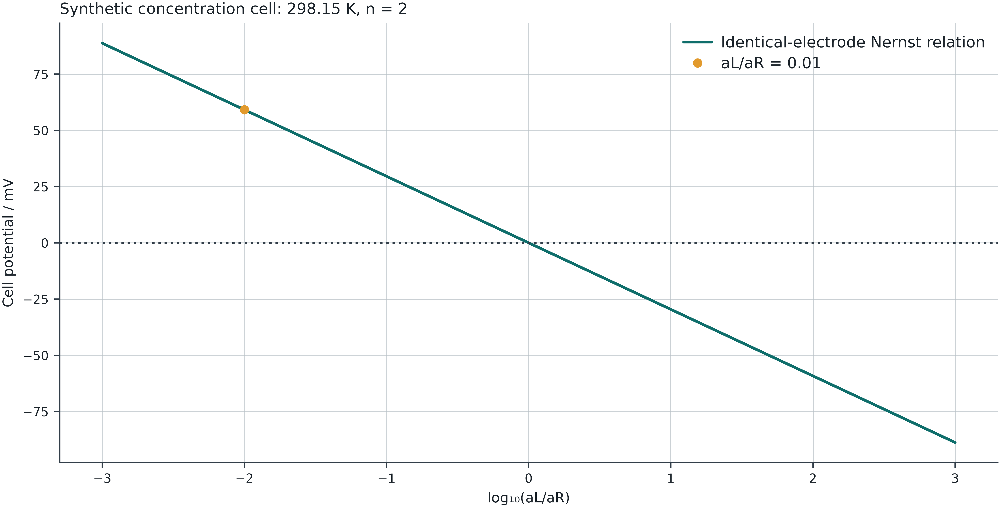

After midterm · Session 6 of 6 · 180 minutes
30 September 2026
Connect balanced half-reactions, activities, potential and Gibbs energy.
Before class: Review reaction stoichiometry, ΔrG and dimensionless reaction quotients.
| In class | Minutes |
|---|---|
| Recall and prediction | 10 |
| Concepts and derivation | 45 |
| Worked example | 30 |
| Break | 10 |
| Instructor lab demonstration | 25 |
| Guided student exploration | 35 |
| Discussion and interpretation | 15 |
| Exit question and independent task | 10 |
For an ion of charge number zᵢ, \tilde\mu_i=\mu_i+z_iF\varphi
Chemical and electrical contributions enter the driving force. The cell potential connects that driving force to electrical work under reversible conditions.
Enter both half-reactions as reductions. Reverse the left reaction and add the right after matching electron counts.
E_{cell}^\circ=E_{right}^\circ-E_{left}^\circ
Both potentials need the same reference electrode and temperature. Multiplying a half-reaction does not multiply its potential.
A reduction consuming n electrons has \sum_{species}\nu_i z_i+n=0
Lab 13 excludes electrons from the species table and adds their charge using the entered n. It checks the declared atom counts independently.
Matching electron counts uses their least common multiple.
\Delta_rG^\circ=-nFE^\circ,\qquad \ln K=\frac{nFE^\circ}{RT} \Delta_rG=-nFE
Positive E favors the written cell reaction. At complete-cell equilibrium Q=K and E=0.
These relationships refer to the written reaction basis.
Combine ΔrG=ΔrG°+RTlnQ with ΔrG=−nFE: E=E^\circ-\frac{RT}{nF}\ln Q
At 298.15 K, E=E^\circ-\frac{0.05915935\ \mathrm V}{n}\log_{10}Q
Changing T requires valid E° data at the new T.
For identical M²⁺/M electrodes, M_L+M_R^{2+}\rightleftharpoons M_L^{2+}+M_R Q=\frac{a(M_L^{2+})}{a(M_R^{2+})},\qquad E^\circ=0
The same ion in different compartments cannot be canceled when its activities differ. Pure present solids have unit activity.
At 298.15 K, n=2, aL=0.01 and aR=1: Q=0.01,\qquad E=+0.05915935\ \mathrm V
E°=0, K=1, but E is nonzero. Reversing the concentrations changes the sign of E. Equal activities give E=0.
ΔrG≈−11.416 kJ per mol of the written reaction.

For a molarity standard, a_i=\gamma_i c_i/c^\circ
Changing γ changes the activity ratio even if both concentrations are unchanged. A molality-based γ cannot be inserted into this equation without a consistent conversion.
Individual-ion activity conventions and reference states must match the potential data.
Multiply the full cell reaction by two:
| Quantity | Transformation |
|---|---|
| n, ΔrG°, ΔrG | Multiply by 2 |
| lnK, lnQ | Multiply by 2 |
| K, Q | Square |
| E°, E | Unchanged |
Potential is a driving force per unit charge, not a reaction energy.
Produce two concentration-cell states and a reaction-scaled version of one state.
Check Eright−Eleft, −nFE and the stoichiometric/charge balances. Explain any changed sign.
Save a study file and worksheet, then reopen them to confirm that the calculation and explanation can be reproduced.
The lab assumes reversible electrodes and zero liquid-junction potential.
It does not calculate current, kinetic overpotential, ohmic loss, mass-transfer limits or full electrolyte speciation.
A nonzero open-circuit potential is compatible with local electrode equilibrium; complete cell-reaction equilibrium gives E=0.
A simulation converges and every balance closes. What could still make the predicted voltage or phase state wrong?
Explain the chain connecting chemical potential, model assumptions, equilibrium constraints, numerical checks and experimental evidence.
Two concentration-cell states, a reversal check and a reaction-scaling check, with consistent reference electrodes.
Retain the calculator export, your worksheet, a comparison plot/table and one independent check. State an assumption that limits your conclusion.
Use the core labs on the learning path. Optional extensions are additional work.
Module reference deck · Lab sources and equations
IUPAC: standard electromotive force and standard equilibrium constant.
Synthetic worked examples illustrate calculations; they are not evidence of real-system accuracy.